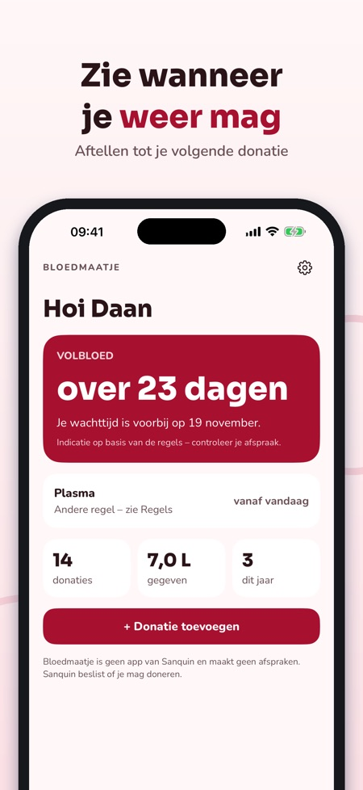
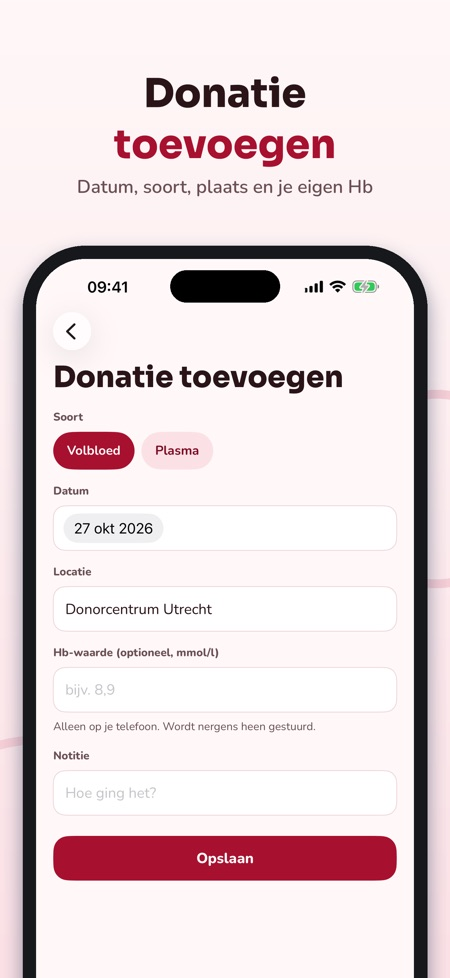
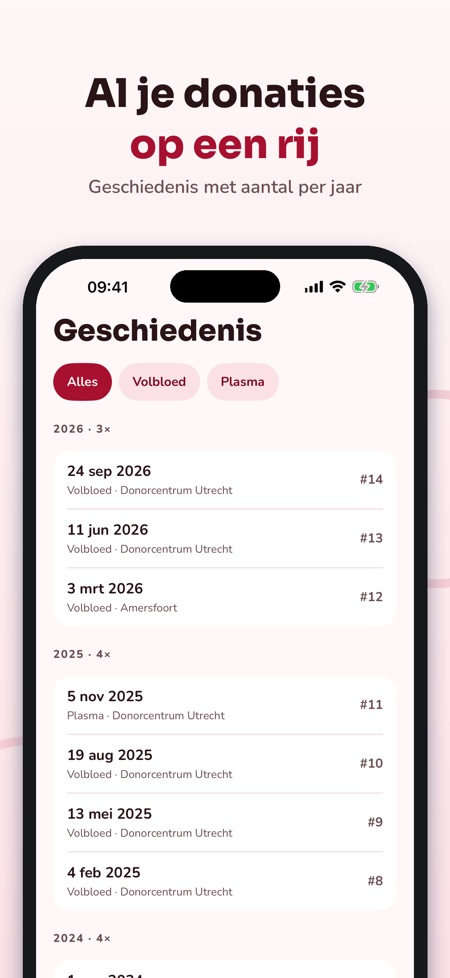

Bloedmaatje houdt je donaties bij en laat zien wanneer je weer mag geven, voor volbloed en plasma. Werkt offline en zonder account.



De app houdt je donaties bij en toont een aftelling tot je volgende donatie, voor volbloed en plasma.
Nee. Bloedmaatje geeft geen medisch advies en beslist niet of je mag doneren; dat doet de bloedbank.
Datum, soort (bloed of plasma), plaats, een notitie en eventueel je eigen Hb-waarde.
Ja, de app herinnert je op je telefoon zodra je weer mag geven.
Nee. De app werkt offline en zonder account, en je Hb-waarden blijven op je telefoon.
Bijhouden, aftellen, herinnering, geschiedenis en mijlpalen kun je gebruiken zonder aankoop.
Een eenmalige aankoop voor de widget met aftellen, statistiek per jaar en het Hb-logboek. Geen abonnement.
Nee, de app is onafhankelijk en niet verbonden aan Sanquin. Hij maakt ook geen afspraken.
Bloedmaatje houdt je donaties bij en laat zien wanneer je weer mag geven.
Bijhouden, aftellen, herinnering, geschiedenis en mijlpalen kun je gebruiken zonder aankoop. Bloedmaatje Plus is een eenmalige aankoop voor widget, statistiek en het Hb-logboek. Geen abonnement.
Bloedmaatje geeft geen medisch advies en beslist niet of je mag doneren; dat doet de bloedbank. De app is onafhankelijk, niet verbonden aan Sanquin en maakt geen afspraken. Je Hb-waarden blijven op je telefoon.